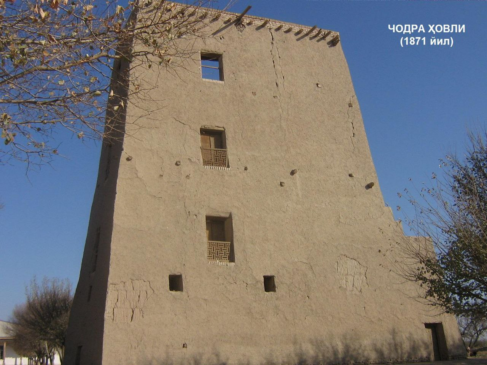
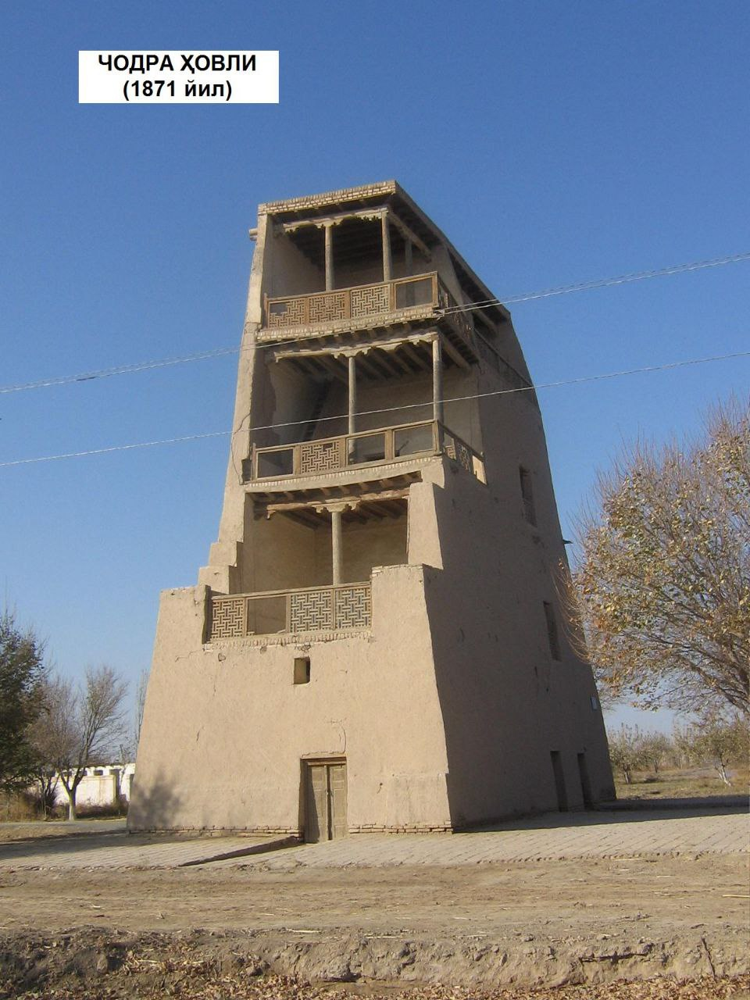

"CHODRA XOVLI"
1. Me’moriy inshootning nomi:
"CHODRA XOVLI"
2. Me’moriy inshoot tiklangan yil:
XV-XVII asrlarga oid
3. Me’moriy inshoot joylashgan manzil:
Chodra Hovli "Xorazm viloyati Xiva tumani “Soyot” qishlog‘ida qurilgan hududida joylashgan.
4. Me’moriy inshootning qurilish materiallari:
Xom g‘isht, paxsa - guvala, qum, alebastr-ganch, yog‘och
5. Inshootning bosh fasadi h.k.lar:


6. Me’moriy inshootning o‘lchamlari
Chodra Hovli binosining rejadagi o‘lchamlari 16x8 m, balandligi 20 metr. Birinchi qavatdagi paxsaning eni – 80sm, to‘rtinchi qavatdagi sinch devor qalinligi – 40sm. 4 qavat 2 ta “ters ayvon” ko‘rinishida qurilgan
7. Me’moriy inshoot to‘g‘risida tarixiy ma’lumot:
Chodra hovlining hozirgi ko‘rinishi 1871 yilda barpo qilingan bo‘lib, Xiva xonlarining yozgi dam olish maskani bo‘lgan. Chodra – chordara so‘zining qisqartirilgan ko‘rinishi, ya’ni forschadan tarjimasi: chor – to‘rt, dara – tik chuqurlik ma’nolarini beradi. Qariyalarning aytishlaricha, eskidan ushbu hovli atroflari gullab yashnagan mevali bog‘ bo‘lib, bog‘ atroflari yer osti suvlari sathini pasaytirish maqsadida chuqur zaxkashlar qazilgan. Shundan bu bog‘ Chodra bog‘ deb nom olgan. Bog‘ning o‘rtasida balandligi taxminan 16-17 metr bo‘lgan 4 qavatli ters ayvonchalar va bitta xonadan milliy ko‘shk uslubidagi bino mavjud. Birinchi qavati yopiq, yordamchi xonalar, 2 va 3 qavatlarida kirish eshiklari an’anaviy shimol va g‘arb tomonga qaragan, yarim yopilgan, milliy Xiva uslubida o‘yma naqshinkor yog‘och ustunli va panjaralar bilan bezalgan, ayvonchalar orqali kiriladigan yashash xonalaridan iborat. 4 qavatdagi xona o‘rniga ham ayvoncha ishlangan
8. Me’moriy inshootning texnik holati:
Y10% devor konstruksiyalari ekologik va texnogen ta’sirlar natijasida yo‘qolgan, texnik holati qoniqarli.
BOSH SAHIFAGA QAYTISH